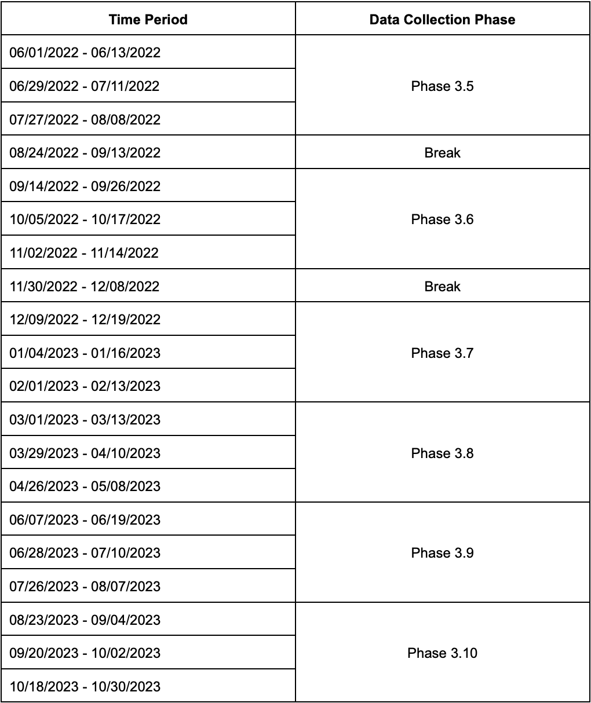
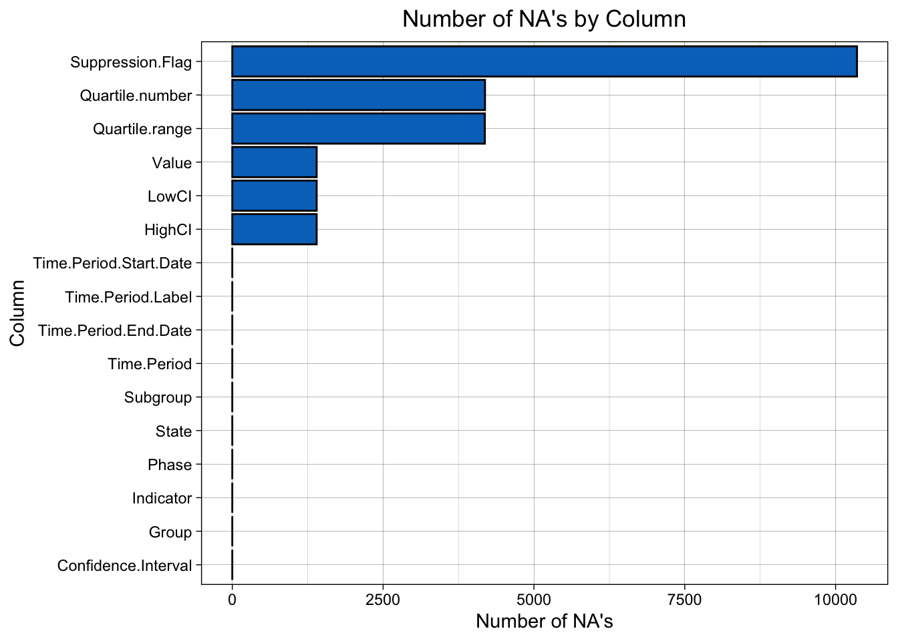
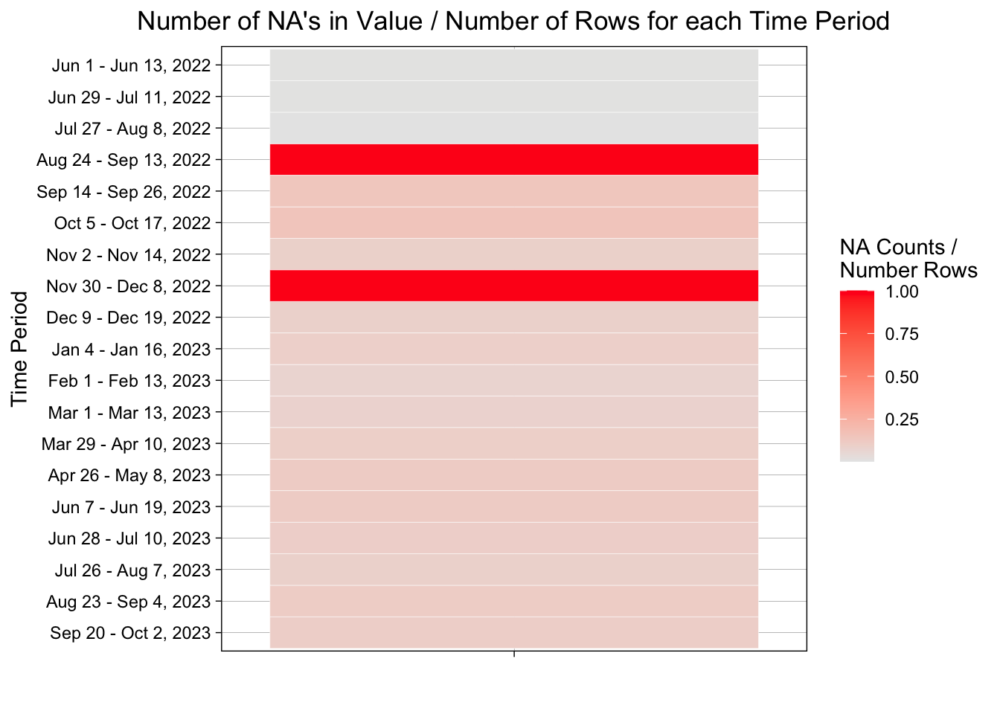
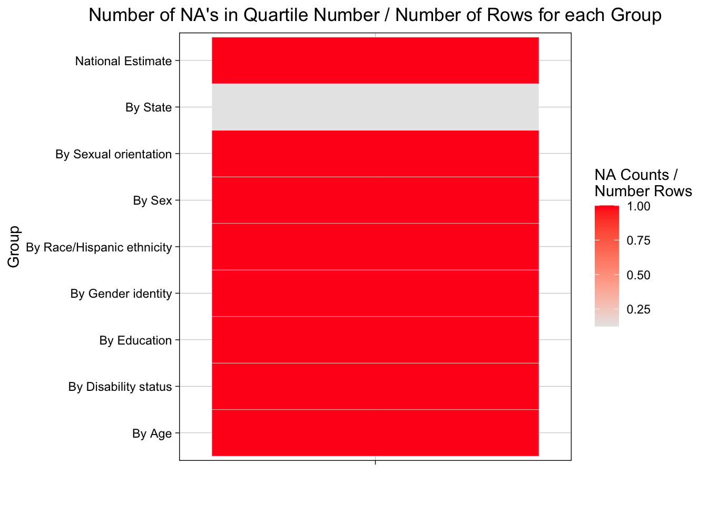

The dataset used for this project is survey data from the Household Pulse Survey, a survey administered by the U.S. Census Bureau designed to measure household experiences during the coronavirus pandemic. The Household Pulse Survey was administered starting in April 2020, and has been routinely administered on a two-weeks on, two-weeks off cycle since then. More complete information on the survey can be found on the Census Bureau website here, and the exact timing of data collection can be seen below.

In order to analyze the prevalence and effects of Long COVID among various demographics, we used a subset of the questions asked on the Household Pulse Survey that were specific to post-COVID-19 conditions. These questions focus on the occurrence of COVID symptoms that lasted at least three months post-testing positive for COVID-19, and were introduced beginning in Phase 3.5 of the Household Pulse Survey (on June 1, 2022). Responses to these questions were then collated by the National Center for Health Statistics, which were then published by the Centers for Disease Control and Prevention (CDC). This dataset, which was last updated on October 12, 2023 (following the conclusion of Phase 3.9) can be found on the CDC website here.
2.1.2 Dataset Overview
The dataset was directly downloaded from the CDC as a csv file. It consists of 14 columns and 11376 rows and contains the estimates of:
The percentage of all U.S. adults who said they ever had COVID.
The percentage of all U.S. adults who ever experienced post-COVID conditions.
The percentage of all U.S. adults who ever experienced post-COVID conditions among those who ever had COVID.
The percentage of all U.S. adults who are currently experiencing post-COVID conditions.
The percentage of adults who are currently experiencing post-COVID conditions (long COVID) among those who ever had COVID.
Additionally, starting on September 14, 2022 (Phase 3.6) the following responses were also included:
The percentage of U.S. adults currently experiencing any activity limitations (either ‘yes, a little’ or ‘yes, a lot’ responses) from long COVID, either among adults who are currently experiencing long COVID or among all adults.
The percentage of U.S. adults currently experiencing significant activity limitations (‘yes, a lot’ response) from long COVID, either among adults who are currently experiencing long COVID or among all adults.
The primary columns of the dataset are:
Indicator: one of the categories (a-g) presented above.
Group: The grouping of the population on which the percentages are measured. Included groupings are National Estimate (aggregated proportion across all U.S. adults), age, sex, gender identity, sexual orientation, race/ethnicity, education status, disability status, and state.
State: Either the state that the state grouping corresponds to (if applicable), or United States.
Subgroup: The category within the group specified by Group if not grouped by state, or equal to state otherwise.
Phase, Time Period, Time Period Label: values regarding the time period of the data collection, including the Phase of data collection, time period the data was collected, and label for the time period.
Time Period Start Date
Time Period End Date
Value: Estimate of the proportion of adults experiencing symptoms, with exact symptoms and conditions outlined in the indicator, group, and subgroup columns.
The dataset contains additional columns with confidence intervals and quartile information as related to the value column. Specifically, the dataset contains columns for the low confidence interval bound (LowCI), high confidence interval bound (HighCI), Confidence Interval, Quartile Number (Either 1, 2, 3, or 4), and Quartile Range. An additional column Suppression Flag is also present, which contains a value of 1 if the value in Value is unreliable and is empty otherwise.
As part of the data release process, the CDC also acknowledged several limitations and concerns with the study, which are outlined in full on the CDC summary page for the Household Pulse Survey found here. The most important limitations and concerns are outlined below:
Throughout the duration of the data collection process, response rates across various demographics were relatively low. In fact, when adjusted for nonresponse and to match Census Bureau estimates of the population by age, sex, race and ethnicity, and educational attainment, response rates ranged from 3.9%-7.3%, which is much lower than most federally-sponsored surveys.
Confidence intervals included in the tables on this page only reflect the potential for sampling error. These intervals do not account for various nonsampling errors, including measurement errors, nonresponse errors, or processing errors.
The percentage of adults who said they ever had COVID based on the Household Pulse Survey is lower than other estimates based on seroprevalence studies. This discrepancy between reported COVID cases and true COVID cases based on blood serum is likely due to the relatively high percentage of asymptomatic individuals with COVID, but is still worth noting.
2.2 Research Plan
Due to the structure of our dataset, we will be able to use our data to answer all of our research questions proposed in the introduction:
Question 1: How big of a problem actually is Long COVID? Have reported cases increased over the past year, decreased, or remained relatively constant, and what percentage of adults in the US are actually impacted?
In order to assess the prevalence of Long COVID across the entire adult population in the United States, we will primarily use the aggregated responses recorded in the National Estimate level of Group, as this contains the total proportion of all adults in the U.S. affected by some aspect of Long COVID. It is important to note here that we will not be looking at any demographic information yet, only the totals across all adults in the U.S. Additionally, even while sticking to the national estimates, we still have a number of aspects of Long COVID that we are able to investigate. For one, we can use the various levels of Indicator to assess what proportion of adults ever experienced Long COVID, either as a percentage of all adults or as a percentage of all adults that ever had COVID. We can also use the levels of Indicator to assess what proportion of adults are currently Long COVID, either as a percentage of all adults or as a percentage of all adults that ever had COVID. Finally, we can combine this information with the information stored in the various time period columns, including Time Period Label, Time Period Start Date, and Time Period End Date, in order to see how these proportions change over time. By doing so, we will be able to see how incidences of Long COVID have changed over the past two years, both in terms of total levels and in terms of current cases.
Question 2: Do factors like age, education, disability status, or geographic location impact the likelihood to develop Long COVID? If so, what factors are most impactful?
In our dataset, all demographic information is contained as categorical variables within the Group, Subgroup, and State columns. By filtering data using the Group column, we will be able to select populations based on a single demographic identifier at a time, such as age, disability status, or geographic location (by state). We can then use the identifying information contained within either the Subgroup column or the State column to compare the proportion stored in Value across each of the different subgroups for each of the different demographics contained in the dataset. For this analysis, since we are most interested if certain demographics are at an increased risk to develop Long COVID, we will focus on the same levels of Indicator that we focused on in our analysis of question 1, in particular the proportion of adults that ever experienced Long COVID as a percentage of all adults and the proportion of adults that are currently experiencing Long COVID as a percentage of all adults.
Question 3: What impact does Long COVID have on various health metrics, such as level of fatigue or activity metrics?
To investigate if Long COVID has a tangible impact on various health metrics, we aim to use activity limitations as a function of Long COVID as an indicator of overall health. This information is again stored in the Indicator column, including both the percentage of adults currently experiencing any activity limitations in response to Long COVID and the percentage of adults currently experiencing significant activity limitations in response to Long COVID. If we now substitute this indicator into our analyses for questions 1 and 2, we will not only be able to measure how prevalent activity limitations are among Long COVID patients over the time course of the survey, but also whether or not certain demographics are most at risk for more severe activity limitations. This question will likely be most important for addressing what populations are actually at the highest risk for long-term complications from COVID-19, and in turn will allow us to best advise allocation of resources for COVID prevention and treatment.
2.3 Missing value analysis
In order to investigate the presence of missing values, we first wanted to see what columns contained missing values, and how many missing values they contained. To do so, we calculated the sum of the NA’s in each column, and graphed them in the bar chart below. It is also worth noting that the Quartile Range column initially stores all NA’s as empty characters (““), and thus these values need to be converted to NA’s in order to properly count the number of NA’s in each column.
Code
# Import Required Librarieslibrary(dplyr)library(ggplot2)library(forcats)# Import Datapcc <-read.csv("Post-COVID_Conditions.csv")pcc$Quartile.range <-ifelse(pcc$Quartile.range =="", NA, pcc$Quartile.range)# Get the total number of NA's by columnna_sum <-apply(pcc, 2, function (x) sum(is.na(x)))# Store as a new dataframena_sum <-as.data.frame(na_sum)na_sum$Column <-rownames(na_sum)# Make a bar graph of the number of NA's by columnggplot(na_sum, aes(x = na_sum, y =fct_reorder(Column, na_sum))) +geom_col(fill ="#0073C2FF", color ="black") +ggtitle("Number of NA's by Column") +xlab("Number of NA's") +ylab("Column") +theme_linedraw() +theme(plot.title =element_text(hjust =0.5))

According to the graph above, it seems likely that rows with no stored quartile number also have no stored quartile range, and similarly, rows that do not contain a stored value also do not contain a low or high confidence interval bound. Additionally, the large number of rows that contain an NA for Suppression Flag suggests that most rows in the dataset do not contain a value of 1 for Suppression Flag, indicating that most rows in the dataset contain reliable estimates for Value.
To quickly confirm if rows with no stored quartile number also have no stored quartile range, we filtered the data for only rows that contained NA’s in both the Quartile Number and Quartile Range columns, and compared the number of rows to the number of total rows that contain an NA in either of the two columns. Similarly, to confirm if rows that do not contain a stored value also do not contain a low or high confidence interval bound, we filtered the data for only rows that contained NA’s in the Value, LowCI, and HighCI columns, and compared the number of rows to the number of total rows that contain an NA in any of the three columns.
Code
# Get only rows that have an NA in Quartile Number AND Quartile RangeQNandQR <- pcc %>%filter(is.na(Quartile.number) &is.na(Quartile.range))print_text_1 <-c("The number of rows that have NA's in Quartile Number AND Quartile Range:", nrow(QNandQR))print(gsub(",", "", toString(print_text_1)))
[1] "The number of rows that have NA's in Quartile Number AND Quartile Range: 4185"
Code
# Get only rows that have an NA in Quartile Number OR Quartile RangeQNorQR <- pcc %>%filter(is.na(Quartile.number) |is.na(Quartile.range))print_text_2 <-c("The number of rows that have NA's in Quartile Number OR Quartile Range:", nrow(QNorQR))print(gsub(",", "", toString(print_text_2)))
[1] "The number of rows that have NA's in Quartile Number OR Quartile Range: 4190"
Code
# Get only rows that have an NA in Value, LowCI, AND HighCIVandLCIandHCI <- pcc %>%filter(is.na(Value) &is.na(LowCI) &is.na(HighCI))print_text_3 <-c("The number of rows that have NA's in Value, LowCI, AND HighCI:", nrow(VandLCIandHCI)) print(gsub(",", "", toString(print_text_3)))
[1] "The number of rows that have NA's in Value LowCI AND HighCI: 1399"
Code
# Get only rows that have an NA in Value, LowCI, OR HighCIVorLCIorHCI <- pcc %>%filter(is.na(Value) |is.na(LowCI) |is.na(HighCI))print_text_4 <-c("The number of rows that have NA's in Value, LowCI, OR HighCI:", nrow(VorLCIorHCI))print(gsub(",", "", toString(print_text_4)))
[1] "The number of rows that have NA's in Value LowCI OR HighCI: 1399"
From these lines, we can see that all rows that contain NA values in Value also contain NA values in LowCI and HighCI. This makes sense, since we cannot have a confidence interval for a value if the value does not exist. Similarly, almost all rows that have NA’s in Quartile Number also have NA’s in Quartile Range. Furthermore, when looking at the rows where there is an NA in either Quartile Number or Quartile Range but not both, we observed that the value of Suppression Flag for these rows is 1, indicating that the observation is unreliable. For safety, we set the value of Value, LowCI, HighCI, Quartile Number, and Quartile Range to be NA’s if the value of Suppression Flag is 1, to prevent this issue in future analyses.
Code
# Change the values to NA according to the paragraph abovepcc$Value <-ifelse(is.na(pcc$Suppression.Flag), pcc$Value, NA)pcc$LowCI <-ifelse(is.na(pcc$Suppression.Flag), pcc$LowCI, NA)pcc$HighCI <-ifelse(is.na(pcc$Suppression.Flag), pcc$HighCI, NA)pcc$Quartile.range <-ifelse(is.na(pcc$Suppression.Flag), pcc$Quartile.range, NA)pcc$Quartile.number <-ifelse(is.na(pcc$Suppression.Flag), pcc$Quartile.number, NA)
With the overall trends of what columns contain NA values known, we know wanted to gain further insight into what exact row values or experimental conditions resulted in NA values. To do so, we first looked at whether or not specific time periods contained higher levels of NA values than others. This was accomplished using a heatmap of number of NA’s in the Value column, grouped by each time period. Specifically, we took the total number of NA’s in each time period and divided by the total number of rows in each time period, in order to get the proportion of observations that had NA’s in value for each time period.
Code
# Group the total NA's by Time Period Label and store as a new DFDate_NAs <- pcc %>%mutate(NA_indicator =is.na(Value)) %>%group_by(Time.Period.Label, NA_indicator) %>%summarize(NA_count =sum(NA_indicator)) %>%filter(NA_indicator ==TRUE)# Get the number of rows with each time period label and store it in our new DFPeriod_Label_Counts <-as.numeric(as.matrix(table(pcc$Time.Period.Label)))Date_NAs$Counts <- Period_Label_Counts# Create new column which is NA Counts / Period Label CountsDate_NAs$NAoverTotal <- Date_NAs$NA_count / Date_NAs$Counts# Convert the new TPL to a factor (used below)Date_NAs$Time.Period.Label <-as.factor(Date_NAs$Time.Period.Label)# Create the heatmap: requires manual reordering of the labelsDate_NAs %>%ggplot(aes(x ="", y =fct_rev(fct_relevel(Time.Period.Label, "Jun 1 - Jun 13, 2022", "Jun 29 - Jul 11, 2022", "Jul 27 - Aug 8, 2022", "Aug 24 - Sep 13, 2022", "Sep 14 - Sep 26, 2022","Oct 5 - Oct 17, 2022", "Nov 2 - Nov 14, 2022", "Nov 30 - Dec 8, 2022","Dec 9 - Dec 19, 2022", "Jan 4 - Jan 16, 2023", "Feb 1 - Feb 13, 2023","Mar 1 - Mar 13, 2023", "Mar 29 - Apr 10, 2023", "Apr 26 - May 8, 2023","Jun 7 - Jun 19, 2023", "Jun 28 - Jul 10, 2023", "Jul 26 - Aug 7, 2023","Aug 23 - Sep 4, 2023", "Sep 20 - Oct 2, 2023")), fill = NAoverTotal)) +geom_tile(color ="white") +scale_fill_gradient(low ="#E7E7E7", high ="#FF1B1B", name ="NA Counts / \nNumber Rows") +ggtitle("Number of NA's in Value / Number of Rows for each Time Period") +xlab("") +ylab("Time Period") +theme_linedraw() +theme(plot.title =element_text(hjust =0.5))

Looking at the heatmap above, we observe a major jump in the proportion of NA values between Jul 27 - Aug 8, 2022 and Aug 24 - Sep 13, 2022. We also see a large proportion of NA values during the Nov 30 - Dec 8, 2022 time period. Both of these observations make sense, given that these time periods correspond with breaks in the survey during which no information was collected. Since data weren’t collected during those periods, and both periods had a 100% incidence of NA values, we chose to remove those rows from the dataset for future analyses.
Code
# Remove dates that correspond to breaks of data collectionpcc <- pcc %>%filter(Time.Period.Label !="Aug 24 - Sep 13, 2022"& Time.Period.Label !="Nov 30 - Dec 8, 2022")
Lastly, since many rows contained NA values in Quartile Number and Quartile Range, we now wanted to see if there were any trends in what rows contained NA values in these columns. To do so, we created a heatmap of the number of NA’s in the Quartile Number column, grouped by level in Group. Again, we took the total number of NA’s in each group and divided by the total number of rows in each group, in order to get the proportion of observations that had NA’s in value for each group.
Code
# Group the total NA's by Group and store as a new DFGroup_NAs <- pcc %>%mutate(NA_indicator =is.na(Quartile.number)) %>%group_by(Group, NA_indicator) %>%summarize(NA_count =sum(NA_indicator)) %>%filter(NA_indicator ==TRUE)# Get the number of rows with each group and store it in our new DFGroup_Counts <-as.numeric(as.matrix(table(pcc$Group)))Group_NAs$Counts <- Group_Counts# Create new column which is NA Counts / Period Label CountsGroup_NAs$NAoverTotal <- Group_NAs$NA_count / Group_NAs$Counts# Create the heatmap: requires manual reordering of the labelsGroup_NAs %>%ggplot(aes(x ="", y = Group, fill = NAoverTotal)) +geom_tile(color ="white") +scale_fill_gradient(low ="#E7E7E7", high ="#FF1B1B", name ="NA Counts / \nNumber Rows") +ggtitle("Number of NA's in Quartile Number / Number of Rows for each Group") +xlab("") +ylab("Group") +theme_linedraw() +theme(plot.title =element_text(hjust =0.5))

From the heatmap, we can see that the only group that does not contain all NA values in Quartile Number (and thus, also in Quartile Range) is grouping by state. Likely, this is because quartiles can only be calculated when there are a sufficient number of different subgroups within a given group. As such, since there are over 50 states included as subgroups when grouping by state (all 50 states + Washington DC), quartiles can be calculateed when grouping by state. However, for the other variables with much fewer subgroups, calculating a quartile number and quartile range is not feasible, and thus these values are excluded from the dataset.